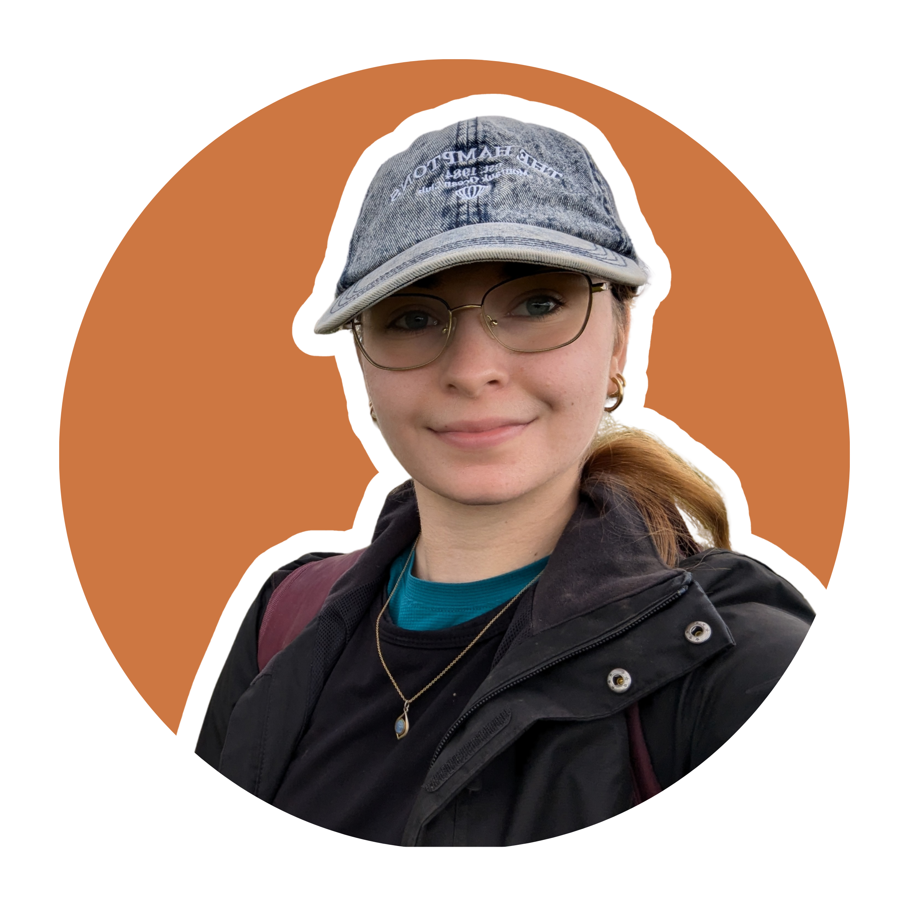
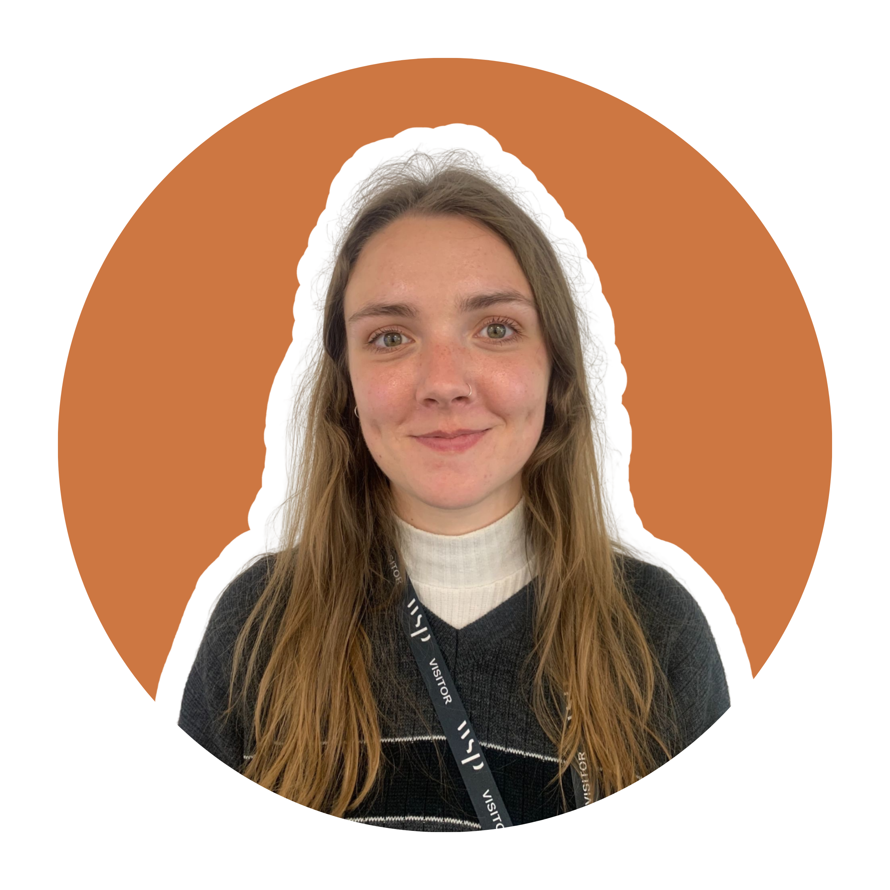
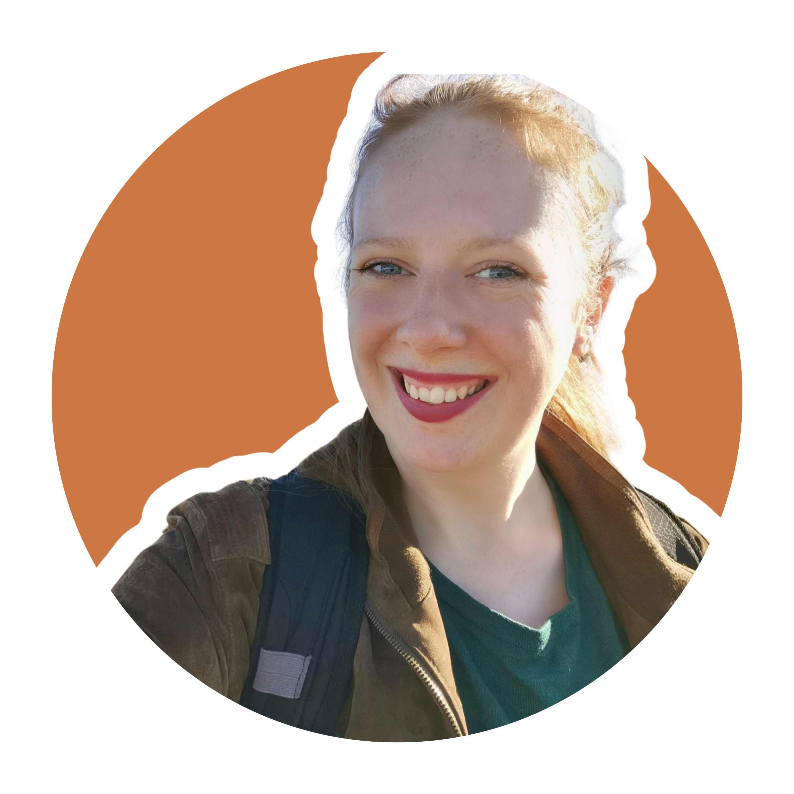
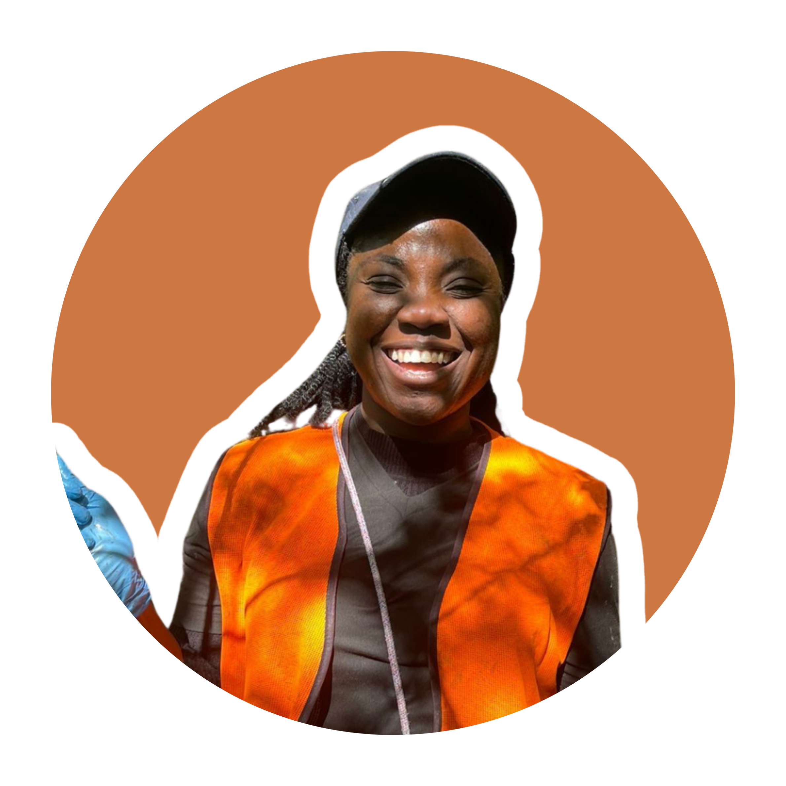
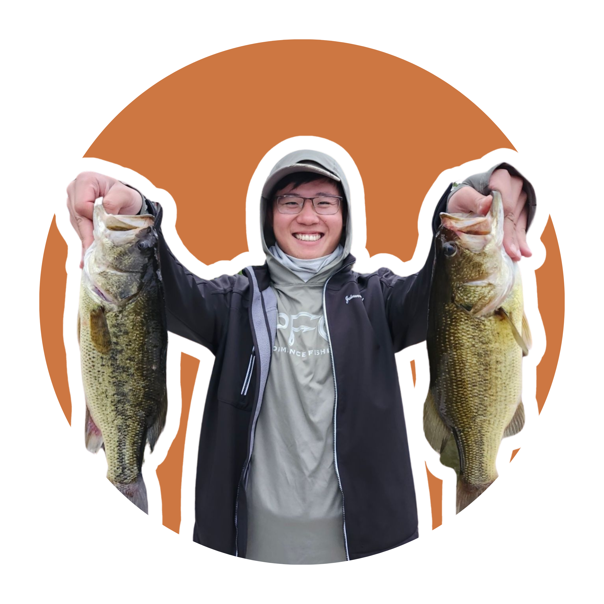
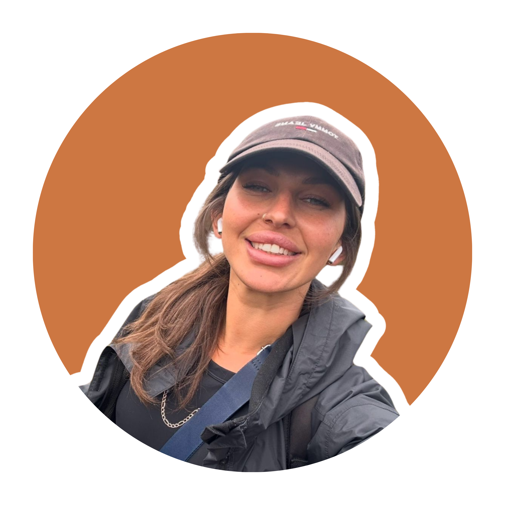
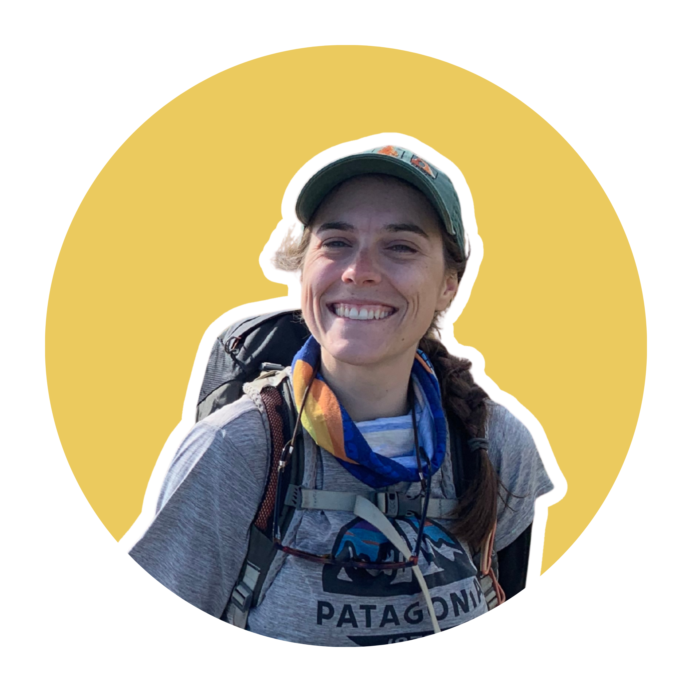

Scott J. Davidson, PhD
Scott is an Assistant Professor in Wetland Carbon Dynamics in the Département des sciences biologiques at the Université du Québec à Montréal (UQAM). He completed his undergraduate degree in Geography at the University of Dundee, UK in 2012 and his MSc in Polar and Alpine Change at the University of Sheffield, UK in 2013. In 2017 he was awarded his PhD from the University of Sheffield, UK, looking at greenhouse gas emissions from arctic tundra landscapes in Alaska. He was a Lecturer in Ecosystem Resilience at the University of Plymouth between August 2021 and May 2025.
His research is focused on the resilience of peatland and wetland ecosystems to both climate change and disturbance regimes. His research combines field research, laboratory analysis, remote sensing and modelling approaches to better constrain spatio-temporal dynamics of wetland ecosystems. He has nearly a decade’s experience working in northern latitude ecosystems in both Europe and North America. Since 2016, he has published >45 publications in a variety of high impact journals with >1500 citations to date. He is also an Adjunct Associate Professor at La Trobe University, Australia. He is a co-founder of both the Wet Woodland Research Network and PEAT: Peatland ECR Action Team, which connects early career peatland scientists globally to develop a diverse, inclusive, and supportive research community and is currently the co-Chair of the British Ecological Society’s Peatlands and Wetlands Special Interest Group.
Lead supervision
Understanding ecosystem dynamics in peat-forming temperate wet woodlands

Carbon stocks and fluxes of the Barachois de Malbaie salt marsh in Gaspésie, Eastern Canada
Co-supervision

Beavers and climate change mitigation in freshwater systems

Developing capacity in ex situ conservation for threatened bryophytes

The forgotten forests: understanding the future of wet woodlands as carbon-dense ecosystems
Maximising ecosystem service provision from wet woodlands for policy and practice

Building a baseline of carbon stocks in boreal swamps in Alberta, Canada

Carbon fluxes from intact and disturbed alpine peatlands (wildfire) across the Bogong High Plains, Australia
Technical staff

Coordinatrice de recherche de la Chaire du Québec sur l’étude du carbone dans les milieux humides comme solution naturelle aux changements climatiques (CARCLIQUE)
Research coordinator of the Quebec Research Chair on the study of carbon in wetlands as a natural solution to climate change (CARCLIQUE)Completed students
PhD students
Natasha Underwood PhD (2021-2024) (University of Plymouth) Ecological and biogeochemical benefits of environmental enhancements at Moorlinch on the Somerset Levels
MSc students
Oscar Kemble ResM (2024-2025) (University of Plymouth) – Evaluating progress towards blanket bog vegetation restoration
Meg Schmidt MSc (2019-2021) (University of Waterloo) – Impacts of seismic line restoration on CO2 and CH4 fluxes and vegetation biomass
Rosie Oliver MSc (2021-2022) (University of Plymouth) – Soil P indices in the Somerset Levels and Moors: a technical evaluation of their value in predicting environmental pollution risk
Jamie Huntriss MSc (2022-2023) (University of Plymouth) – An analysis of wet woodland carbon stocks based on peat core samples: a study of Slapton Ley wet woodland
Caitlin Richards MSc (2022-2023) (University of Plymouth) – Environmental controls on CO2 exchange in a wet woodland in South Devon and the implications of a changing climate
Robert Jones MSc (2022-2023) (University of Plymouth) – Understanding the susceptibility to and recovery from wildfire in peatlands using remote sensing
Eleanor Wiltshire MSc (2022-2023) (University of Plymouth) – Assessing the impacts of nitrate and ammonium on water quality in five Devon rivers between 2020 – 2022
Archie Mortimer MSc (2023-2024) (University of Plymouth) – Assessing the belowground carbon stocks of nationally scarce bog woodland in Scotland
Jill Ashley MSc (2023-2024) (University of Plymouth) – An investigation of the green leaf phenology of a canopy in Bobiri Forest, a semi-deciduous tropical forest in West Africa
Undergraduate research assistants
Billy Fullwood (June – August 2024) (University of Plymouth) – ARIES Research Experience Placement: Using dendrochronology to understand climate and land-use pressures on wet woodland ecosystem